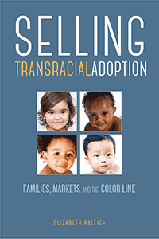

<HTML><head><script> (function(i,s,o,g,r,a,m){i['GoogleAnalyticsObject']=r;i[r]=i[r]||function(){  (i[r].q=i[r].q||[]).push(arguments)},i[r].l=1*new Date();a=s.createElement(o),  m=s.getElementsByTagName(o)[0];a.async=1;a.src=g;m.parentNode.insertBefore(a,m)   })(window,document,'script','//www.google-analytics.com/analytics.js','ga');   ga('create', 'UA-43183130-1', 'temple.edu');   ga('send', 'pageview'); </script><title>Elizabeth Raleigh: Selling Transracial Adoption - Print</TITLE><link rel="stylesheet" href="../general.css" type="text/css"><SCRIPT LANGUAGE = JAVASCRIPT></SCRIPT></HEAD><BODY LINK="#3152A5" VLINK="#3152A5" ALINK=Gray BGCOLOR=White><CENTER><P CLASS=intro><br>Examines cross-race adoptions from the perspectives of adoption providers, showing how racial hierarchies and the supply and demand for children shape the process<br><br></P></CENTER><br>&nbsp;<!--none//--><Table width="100%" border=0 cellspacing=5><tr><td width="175" align="center"></td><td><h1 class = "booktitle">Selling Transracial Adoption</h1> <h1 class = "subtitle">Families, Markets, and the Color Line</h1><h3 class="author">Elizabeth Raleigh </h3><p class="info">paper EAN: 978-1-4399-1478-6 (ISBN:1-4399-1478-8)</br>$34.95, Dec 17, <font color=#990033>Available</font><br><p class="info">cloth EAN:  978-1-4399-1477-9 (ISBN:1-4399-1477-X)</br>$94.50, Dec 17, <font color=#990033>Available</font><br><p class="info"><p class="info">274 pp, 6 x  9, </p></td></tr></table></P></td></tr></table><BR>
	
	
	
	<BLOCKQUOTE></BLOCKQUOTE>
	
	<P><p>While focused on serving children and families, the adoption industry must also generate sufficient revenue to cover an agency's operating costs. With its fee-for-service model, Elizabeth Raleigh asks, How does private adoption operate as a marketplace? Her eye-opening book, <i>Selling Transracial Adoption, </i>provides a fine-grained analysis of the business decisions in the adoption industry and what it teaches us about notions of kinship and race. <br/><br/>Adoption providers, Raleigh declares, are often tasked with pitching the idea of transracial adoption to their mostly white clientele. But not all children are equally "desirable," and transracial adoption&#8212;a market calculation&#8212;is hardly colorblind. <i>Selling Transracial Adoption </i>explicitly focuses on adoption providers and <i> </i>employs candid interviews with adoption workers, social workers, attorneys, and counselors, as well as observations from adoption conferences and information sessions, to <i> </i>illustrate how agencies institute a racial hierarchy&#8212;especially when the supply of young and healthy infants is on the decline. Ultimately, Raleigh discovers that the racialized practices in private adoption serve as a powerful reflection of race in America.<br>
		
	<P CLASS="top"><A HREF="#top">BACK TO TOP</A></P></p>
		
	<P><h2  class="inpageheading">
	<A NAME="excerpt"></a>Excerpt</h2>
	<p><A HREF="http://www.temple.edu/tempress/chapters_2400/2449_ch1.pdf">Read the Introduction (pdf).</A><br>
		
	<P CLASS="top"><A HREF="#top">BACK TO TOP</A></P></P><P></b></p>
	
	<p><h2 class="inpageheading"><A NAME="contents"></a>
	Contents</h2><P><span style="font-family: 'Verdana';font-size: 13px;" >
	Acknowledgments<br/><br/>
	Introduction<br/>
	1. Staying Afloat in a Perfect Storm<br/>
	2. Uneasy Consumers: The Emotion Work of Marketing Adoption<br/>
	3. Transracial Adoption as a Market Calculation<br/>
	4.&quot;And You Get to Black&quot;: Racial Hierarchies and the Black&ndash;Non-Black Divide<br/>
	5. Selling Transracial Adoption: Social Workers' Ideals and Market Concessions<br/>
	Conclusion: The Consequences of Selling Transracial Adoption and the Implications for Adoptive Families<br/><br/>
	Notes<br/>
	References<br/>
	Index</span></P>
	
	<P CLASS="top"><A HREF="#top">BACK TO TOP</A></P></p>

<P><H2  class="inpageheading"><A NAME="author bio"></a>About the Author(s)</H2>
	<p><b>Elizabeth Raleigh</b> is Assistant Professor of Sociology at Carleton College in Northfield, Minnesota.<br>
		
		<P CLASS="top"><A HREF="#top">BACK TO TOP</A></P></P></P><P><h2 class="inpageheading"><a name="subjects"></a>
			Subject Categories</h2> <p><a href="http://www.temple.edu/tempress/sociology.html" target="_top">
			Sociology</a> <br><a href="http://www.temple.edu/tempress/race.html" target="_top">
			Race and Ethnicity</a> <br><a href="http://www.temple.edu/tempress/family.html" target="_top">
			Family Policy</a> <br><a href="" target="_top"></a> <br><a href="" target="_top"></a> </p></P><P></P>

<P CLASS="top"><A HREF="#top">BACK TO TOP</A></P></td><td width=2%>&nbsp;</td><td width=5>&nbsp;</td></tr></table><BR><font face="Arial" size="1"><a href="copyright.html" OnMouseOver="window.status='Web Copyright Policy';return true;" OnMouseOut="window.status=''" TITLE="Web Copyright Policy">&copy;</a> 2018 <a href="http://www.temple.edu" target="new" OnMouseOver="window.status='Link to Temple University home page';return true;" OnMouseOut="window.status=''" TITLE="Link to Temple University home page">Temple University</a>. All Rights Reserved. This page: http://www.temple.edu/tempress/titles/2449_reg.html</font></BODY></HTML>            